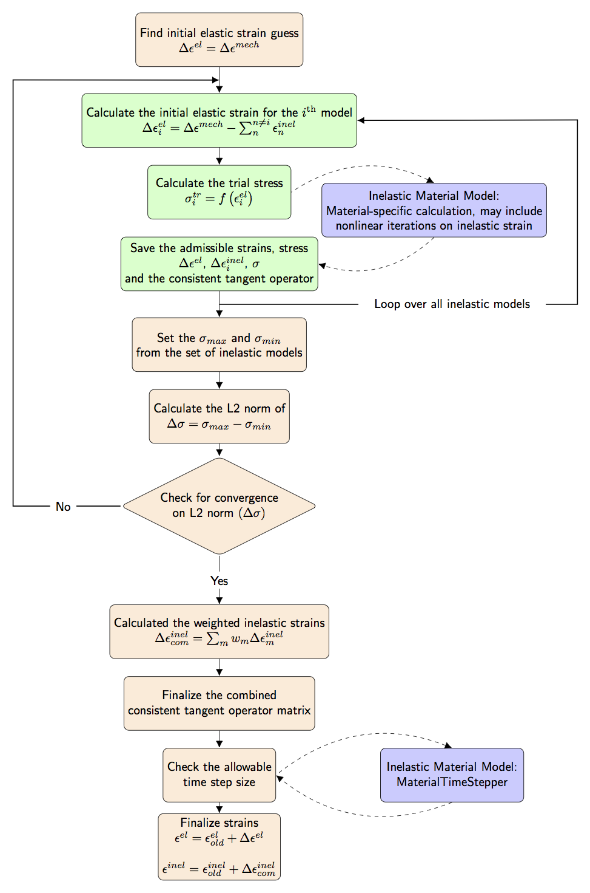
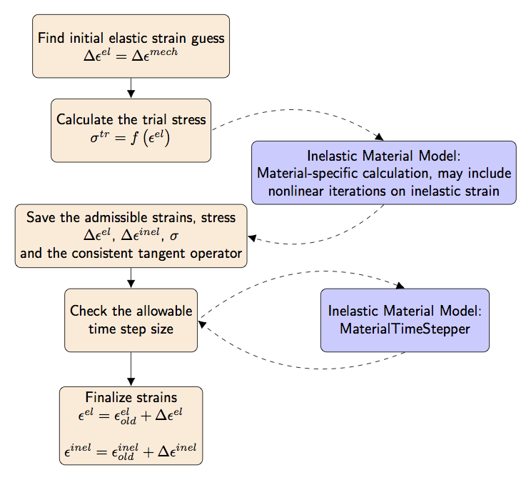

- inelastic_modelsThe material objects to use to calculate stress and inelastic strains. Note: specify creep models first and plasticity models second.
C++ Type:std::vector<MaterialName>
Controllable:No
Description:The material objects to use to calculate stress and inelastic strains. Note: specify creep models first and plasticity models second.
Compute Multiple Inelastic Stress
Compute state (stress and internal parameters such as plastic strains and internal parameters) using an iterative process. Combinations of creep models and plastic models may be used.
Description
ComputeMultipleInelasticStress computes the stress, the consistent tangent operator (or an approximation), and a decomposition of the strain into elastic and inelastic components for a series of different inelastic material models (e.g. creep and plasticity) which inherit from StressUpdateBase. By default finite strains are assumed. The elastic strain is calculated by subtracting the computed inelastic strain increment tensor from the mechanical strain increment tensor. (1) Mechanical strain, , is considered to be the sum of the elastic and inelastic (e.g. plastic and creep) strains.
commentnote:Default Finite Strain Formulation
This class uses the finite incremental strain formulation as a default. Users may elect to use a small incremental strain formulation and set perform_finite_strain_rotations = false if the simulation will only ever use small strains. This class is not intended for use with a total small linearize strain formulation.
ComputeMultipleInelasticStress is designed to be used in conjunction with a separate model or set of models that computes the inelastic strain for a given stress state. These inelastic models must derive from the StressUpdateBase class. The Solid Mechanics module contains a wide variety of such models, including
MultiParameterPlasticityStressUpdate
commentnote:Compatible Inelastic
StressUpdate Material ModelsAll of the inelastic material models that are compatible with ComputeMultipleInelasticStress follow the nomenclature convention of StressUpdate as a suffix to the class name.
ComputeMultipleInelasticStress can accommodate as few as zero inelastic models (in which case the algorithm from ComputeFiniteStrainElasticStress is applied) to as many inelastic material models as is required by the physics. If more than one inelastic material model is supplied to ComputeMultipleInelasticStress, it is recommended that all of the inelastic models inherit from the same base class.
Multiple Inelastic Models

Figure 1: The ComputeMultipleInelasticStress algorithm for calculating the strains and stresses for multiple inelastic material models.
The algorithm used to compute the stress for multiple inelastic models is shown in Figure 1.
When multiple inelastic models are given, ComputeMultipleInelasticStress iterates over the specified inelastic models until the change in stress is within a user-specified tolerance.
Inner Iteration over Inelastic Models
The inner iteration over the multiple inelastic material models is shown in the green components in Figure 1.
When each inelastic model is evaluated, a trial stress is computed using the current elastic strain, which is the total mechanical strain minus the current summation of inelastic strain for all inelastic models. This trial stress can be expressed as (2) where is the elasticity tensor for the material.
The inelastic material model, represented by the blue element Figure 1, is then called. The inelastic material model calculates the inelastic strain increment necessary to produce an admissible stress, as a function of the trial stress. The total inelastic strain increment is updated for each model's contribution. The details of this calculation vary by model and can include the effects of plasticity or creep.
The elastic and inelastic strain increments, stress, and, optionally, the consistent tangent operator are returned to ComputeMultipleInelasticStress from the inelastic material model.
Outer Iteration over Stress Difference
After each inelastic model is called to compute an update to the stress tensor, the minimum and maximum values of each component of the stress tensor, over the course of those iterations, are stored to two tensors denoted as and , respectively. An norm of the difference of these two tensors is then computed as (3) The norm of the stress difference is compared to the absolute and relative tolerances to determine if the solution from the combined inelastic material models is converged (4) where is the norm from the very first outer iteration over all of the inelastic material models. The solution will not converge if the outer iteration loop, shown in the top half of Figure 1, exceeds the maximum number of iterations set by the user.
Finalize Strains and the Jacobian Multiplier
Once convergence on the stress is obtained, the calculation of the inelastic strains is finalized by applying a weighting factor, as shown in Figure 1. This weighting factor has a default value of unity.
Jacobian Multiplier and the Consistent Tangent Operator
The Jacobian multiplier, which is used in the StressDivergenceTensors kernel to condition the Jacobian calculation, must be calculated from the combination of all the different inelastic material models. There are three options used to calculate the combined Jacobian multiplier: Elastic, Partial, and Nonlinear, which are set by the individual elastic material models. (5) where is the Jacobian multiplier, is the elasticity tensor, is the Rank-4 identity tensor, and is the consistent tangent operator.
The consistent tangent operator, defined in Eq. (6) provides the information on how the stress changes with respect to changes in the displacement variables. (6) where is an arbitrary change in the total strain (which occurs because the displacements are changed) and is the resulting change in the stress. In a purely elastic situation (the elasticity tensor), but the inelastic mapping of changes in the stress as a result of changes in the displacement variables is more complicated. In a plastic material model, the proposed values of displacements for the current time step were used to calculate a trial inadmissible stress, , Eq. (2), that was brought back to the yield surface through a radial return algorithm. A slight change in the proposed displacement variables will produce a slightly different trial stress and so on. Other inelastic material models follow a similar pattern.
The user can chose to force all of the inelastic material models to use the elasticity tensor as the consistent tangent operator by setting tangent_operator = elastic. This setting will reduce the computational load of the inelastic material models but may hamper the convergence of the simulation. By default, the inelastic material models are allowed to compute the consistent tangent operator implemented in each individual inelastic model with the tangent_operator = nonlinear option.
Material Time Step Size Limitations
Prior to calculating the final strain values, the algorithm checks the size of the current time step against any limitations on the size of the time step as optionally defined by the inelastic material models. As described in the Material Time Step Limiter section, the time step size involves a post processor to ensure that the current time step size is reasonable for each of the inelastic material models used in the simulation.
At the end of the algorithm, the final value of the elastic and inelastic strain tensors are calculated as shown in the last element of Figure 1.
Single Inelastic Model
ComputeMultipleInelasticStress can also be used to calculate the inelastic strain and the stress when only a single inelastic material model is provided.

Figure 2: The optimized algorithm for calculating the strains and stress in the case when only a single inelastic material model is specified.
The algorithm, shown in Figure 2, used for a single inelastic material model is an optimized version of the multiple materials algorithm. With no need to iterate over multiple inelastic models, both the inner and outer iterations from Figure 1 are removed from the algorithm in Figure 2.
The initial elastic strain increment guess is assumed to be the initial mechanical strain increment, and the trial stress for the single inelastic model is calculated from that elastic strain increment as in Eq. (2). These stress and strain values are passed directly to the inelastic material model.
The material model computes the admissible stress and strain states, as indicated by the blue element in Figure 2. An optional consistent tangent operator matrix is also returned by the inelastic material model. As in the multiple inelastic models algorithm, the user may force the use of the Elastic option by setting tangent_operator = elastic. By default, the inelastic material model is allowed to compute the consistent tangent operator implemented in each individual inelastic model with the tangent_operator = nonlinear option.
The consistent tangent operator is then used to find the Jacobian multiplier with (7) where is the Jacobian multiplier, is the elasticity tensor, is the Rank-4 identity tensor, and is the consistent tangent operator, as discussed in the multiple inelastic material models section.
The maximum size of the allowable time step is then optionally calculated by the inelastic material model, as described in the section below on the Material Time Step Limiter. At the conclusion of the algorithm, the value of the elastic and inelastic strain states are updated as shown in Figure 2.
Cycle Through One Inelastic Model per Time Step
ComputeMultipleInelasticStress also includes an option to run a series of inelastic models in a rotating fashion such that only a single inelastic model is run on a timestep. This option uses the same algorithm as in Figure 2 to determine the strains and stress value based on the rotated single inelastic model. A separate method is then employed to propagate the strain and stress values to the other inelastic material models for storage as old material property values.
Other Calculations Performed by StressUpdate Materials
The ComputeMultipleInelasticStress material relies on two helper calculations to aid the simulation in converging. These helper computations are defined within the specific inelastic models, and only a brief overview is given here. These methods are represented within the blue inelastic material model boxes in Figure 1 and Figure 2. For specific details of the implementations, see the documentation pages for the individual inelastic StressUpdate materials.
The first helper computation, the consistent tangent operator, is an optional feature which is implemented for only certain inelastic stress material models, and the material time step limiter is implemented in the models which use the Radial Return Stress Update algorithm.
Consistent Tangent Operator
The consistent tangent operator is used to improve the convergence of mechanics problems (see a reference such as Simo and Taylor (1985) for an introduction to consistent tangent operators). The Jacobian matrix, Eq. (5) and Eq. (7), is used to capture how the change in the residual calculation changes with respect to changes in the displacement variables. To calculate the Jacobian, MOOSE relies on knowing how the stress changes with respect to changes in the displacement variables.
Because the change of the stress with respect to the change in displacements is material specific, the value of the consistent tangent operator is computed in each inelastic material model. By default the consistent tangent operator is set equal to the elasticity tensor (the option Elastic in Eq. (5) and Eq. (7)). Inelastic material models which use either the Partial or Nonlinear options in Eq. (5) or Eq. (7) define a material specific consistent tangent operator.
Generally Partial consistent tangent operators should be implemented for non-yielding materials (e.g. volumetric swelling) and Full consistent tangent operators should be implemented for yielding material models (e.g. plasticity).
Include Damage Model
Optionally, the effect of damage on the stress calculation can be included in the model. Another material that defines the evolution of damage should be coupled using parameter damage_model. Here, first the inelastic strains and corresponding effective stresses are calculated based on the undamaged properties. Afterwards, the damage index is applied on the effective stress to calculate the damaged stress. This captures the effect of damage in a material undergoing creep or plastic deformation.
Material Time Step Limiter
In some cases, particularly in creep, limits on the time step are required by the material model formulation. Each inelastic material model is responsible for calculating the maximum time step allowable for that material model. The MaterialTimeStepPostprocessor finds the minimum time step size limits from the entire simulation domain. The postprocessor then interfaces with the IterationAdaptiveDT to restrict the time step size based on the limit calculated in the previous time step. When the damage model is included, the timestep is limited by the minimum timestep between the inelastic models and the damage model.
Example Input Files
The input settings for multiple inelastic material models and a single inelastic model are similar, and examples of both are shown below.
Multiple Inelastic Models
For multiple inelastic models, all of the inelastic material model names must be listed as arguments to the inelastic_models parameter. The inelastic material blocks must also be present.
[Materials<<<{"href": "../../syntax/Materials/index.html"}>>>]
[./elasticity_tensor]
type = ComputeIsotropicElasticityTensor<<<{"description": "Compute a constant isotropic elasticity tensor.", "href": "ComputeIsotropicElasticityTensor.html"}>>>
block<<<{"description": "The list of blocks (ids or names) that this object will be applied"}>>> = 0
youngs_modulus<<<{"description": "Young's modulus of the material."}>>> = 1e3
poissons_ratio<<<{"description": "Poisson's ratio for the material."}>>> = 0.3
[../]
[./creep_plas]
type = ComputeMultipleInelasticStress<<<{"description": "Compute state (stress and internal parameters such as plastic strains and internal parameters) using an iterative process. Combinations of creep models and plastic models may be used.", "href": "ComputeMultipleInelasticStress.html"}>>>
block<<<{"description": "The list of blocks (ids or names) that this object will be applied"}>>> = 0
tangent_operator<<<{"description": "Type of tangent operator to return. 'elastic': return the elasticity tensor. 'nonlinear': return the full, general consistent tangent operator."}>>> = elastic
inelastic_models<<<{"description": "The material objects to use to calculate stress and inelastic strains. Note: specify creep models first and plasticity models second."}>>> = 'creep plas'
max_iterations<<<{"description": "Maximum number of the stress update iterations over the stress change after all update materials are called"}>>> = 50
absolute_tolerance<<<{"description": "Absolute convergence tolerance for the stress update iterations over the stress change after all update materials are called"}>>> = 1e-05
combined_inelastic_strain_weights<<<{"description": "The combined_inelastic_strain Material Property is a weighted sum of the model inelastic strains. This parameter is a vector of weights, of the same length as inelastic_models. Default = '1 1 ... 1'. This parameter is set to 1 if the number of models = 1"}>>> = '0.0 1.0'
[../]
[./creep]
type = PowerLawCreepStressUpdate<<<{"description": "This class uses the stress update material in a radial return isotropic power law creep model. This class can be used in conjunction with other creep and plasticity materials for more complex simulations.", "href": "PowerLawCreepStressUpdate.html"}>>>
block<<<{"description": "The list of blocks (ids or names) that this object will be applied"}>>> = 0
coefficient<<<{"description": "Leading coefficient in power-law equation"}>>> = 0.5e-7
n_exponent<<<{"description": "Exponent on effective stress in power-law equation"}>>> = 5
m_exponent<<<{"description": "Exponent on time in power-law equation"}>>> = -0.5
activation_energy<<<{"description": "Activation energy"}>>> = 0
[../]
[./plas]
type = IsotropicPlasticityStressUpdate<<<{"description": "This class uses the discrete material in a radial return isotropic plasticity model. This class is one of the basic radial return constitutive models, yet it can be used in conjunction with other creep and plasticity materials for more complex simulations.", "href": "IsotropicPlasticityStressUpdate.html"}>>>
block<<<{"description": "The list of blocks (ids or names) that this object will be applied"}>>> = 0
hardening_constant<<<{"description": "Hardening slope"}>>> = 100
yield_stress<<<{"description": "The point at which plastic strain begins accumulating"}>>> = 20
[../]
[]Single Inelastic Model
For a single inelastic material model the input syntax is simply condensed
[./stress]
type = ComputeMultipleInelasticStress
inelastic_models = 'isoplas'
block = 1
[../]and only a single inelastic material model is included in the input. This example includes the max_inelastic_increment parameter which is used to limit the time step size.
[./isoplas]
type = IsotropicPlasticityStressUpdate
yield_stress = 5e6
hardening_constant = 0.0
relative_tolerance = 1e-20
absolute_tolerance = 1e-8
max_inelastic_increment = 0.000001
[../]Input Parameters
- absolute_tolerance1e-05Absolute convergence tolerance for the stress update iterations over the stress change after all update materials are called
Default:1e-05
C++ Type:double
Unit:(no unit assumed)
Controllable:No
Description:Absolute convergence tolerance for the stress update iterations over the stress change after all update materials are called
- base_nameOptional parameter that allows the user to define multiple mechanics material systems on the same block, i.e. for multiple phases
C++ Type:std::string
Controllable:No
Description:Optional parameter that allows the user to define multiple mechanics material systems on the same block, i.e. for multiple phases
- blockThe list of blocks (ids or names) that this object will be applied
C++ Type:std::vector<SubdomainName>
Controllable:No
Description:The list of blocks (ids or names) that this object will be applied
- boundaryThe list of boundaries (ids or names) from the mesh where this object applies
C++ Type:std::vector<BoundaryName>
Controllable:No
Description:The list of boundaries (ids or names) from the mesh where this object applies
- combined_inelastic_strain_weightsThe combined_inelastic_strain Material Property is a weighted sum of the model inelastic strains. This parameter is a vector of weights, of the same length as inelastic_models. Default = '1 1 ... 1'. This parameter is set to 1 if the number of models = 1
C++ Type:std::vector<double>
Unit:(no unit assumed)
Controllable:No
Description:The combined_inelastic_strain Material Property is a weighted sum of the model inelastic strains. This parameter is a vector of weights, of the same length as inelastic_models. Default = '1 1 ... 1'. This parameter is set to 1 if the number of models = 1
- computeTrueWhen false, MOOSE will not call compute methods on this material. The user must call computeProperties() after retrieving the MaterialBase via MaterialBasePropertyInterface::getMaterialBase(). Non-computed MaterialBases are not sorted for dependencies.
Default:True
C++ Type:bool
Controllable:No
Description:When false, MOOSE will not call compute methods on this material. The user must call computeProperties() after retrieving the MaterialBase via MaterialBasePropertyInterface::getMaterialBase(). Non-computed MaterialBases are not sorted for dependencies.
- constant_onNONEWhen ELEMENT, MOOSE will only call computeQpProperties() for the 0th quadrature point, and then copy that value to the other qps.When SUBDOMAIN, MOOSE will only call computeQpProperties() for the 0th quadrature point, and then copy that value to the other qps. Evaluations on element qps will be skipped
Default:NONE
C++ Type:MooseEnum
Controllable:No
Description:When ELEMENT, MOOSE will only call computeQpProperties() for the 0th quadrature point, and then copy that value to the other qps.When SUBDOMAIN, MOOSE will only call computeQpProperties() for the 0th quadrature point, and then copy that value to the other qps. Evaluations on element qps will be skipped
- cycle_modelsFalseAt timestep N use only inelastic model N % num_models.
Default:False
C++ Type:bool
Controllable:No
Description:At timestep N use only inelastic model N % num_models.
- damage_modelName of the damage model
C++ Type:MaterialName
Controllable:No
Description:Name of the damage model
- declare_suffixAn optional suffix parameter that can be appended to any declared properties. The suffix will be prepended with a '_' character.
C++ Type:MaterialPropertyName
Unit:(no unit assumed)
Controllable:No
Description:An optional suffix parameter that can be appended to any declared properties. The suffix will be prepended with a '_' character.
- internal_solve_full_iteration_historyFalseSet to true to output stress update iteration information over the stress change
Default:False
C++ Type:bool
Controllable:No
Description:Set to true to output stress update iteration information over the stress change
- max_iterations30Maximum number of the stress update iterations over the stress change after all update materials are called
Default:30
C++ Type:unsigned int
Controllable:No
Description:Maximum number of the stress update iterations over the stress change after all update materials are called
- perform_finite_strain_rotationsTrueTensors are correctly rotated in finite-strain simulations. For optimal performance you can set this to 'false' if you are only ever using small strains
Default:True
C++ Type:bool
Controllable:No
Description:Tensors are correctly rotated in finite-strain simulations. For optimal performance you can set this to 'false' if you are only ever using small strains
- relative_tolerance1e-05Relative convergence tolerance for the stress update iterations over the stress change after all update materials are called
Default:1e-05
C++ Type:double
Unit:(no unit assumed)
Controllable:No
Description:Relative convergence tolerance for the stress update iterations over the stress change after all update materials are called
- tangent_operatornonlinearType of tangent operator to return. 'elastic': return the elasticity tensor. 'nonlinear': return the full, general consistent tangent operator.
Default:nonlinear
C++ Type:MooseEnum
Controllable:No
Description:Type of tangent operator to return. 'elastic': return the elasticity tensor. 'nonlinear': return the full, general consistent tangent operator.
Optional Parameters
- control_tagsAdds user-defined labels for accessing object parameters via control logic.
C++ Type:std::vector<std::string>
Controllable:No
Description:Adds user-defined labels for accessing object parameters via control logic.
- enableTrueSet the enabled status of the MooseObject.
Default:True
C++ Type:bool
Controllable:Yes
Description:Set the enabled status of the MooseObject.
- implicitTrueDetermines whether this object is calculated using an implicit or explicit form
Default:True
C++ Type:bool
Controllable:No
Description:Determines whether this object is calculated using an implicit or explicit form
- search_methodnearest_node_connected_sidesChoice of search algorithm. All options begin by finding the nearest node in the primary boundary to a query point in the secondary boundary. In the default nearest_node_connected_sides algorithm, primary boundary elements are searched iff that nearest node is one of their nodes. This is fast to determine via a pregenerated node-to-elem map and is robust on conforming meshes. In the optional all_proximate_sides algorithm, primary boundary elements are searched iff they touch that nearest node, even if they are not topologically connected to it. This is more CPU-intensive but is necessary for robustness on any boundary surfaces which has disconnections (such as Flex IGA meshes) or non-conformity (such as hanging nodes in adaptively h-refined meshes).
Default:nearest_node_connected_sides
C++ Type:MooseEnum
Controllable:No
Description:Choice of search algorithm. All options begin by finding the nearest node in the primary boundary to a query point in the secondary boundary. In the default nearest_node_connected_sides algorithm, primary boundary elements are searched iff that nearest node is one of their nodes. This is fast to determine via a pregenerated node-to-elem map and is robust on conforming meshes. In the optional all_proximate_sides algorithm, primary boundary elements are searched iff they touch that nearest node, even if they are not topologically connected to it. This is more CPU-intensive but is necessary for robustness on any boundary surfaces which has disconnections (such as Flex IGA meshes) or non-conformity (such as hanging nodes in adaptively h-refined meshes).
- seed0The seed for the master random number generator
Default:0
C++ Type:unsigned int
Controllable:No
Description:The seed for the master random number generator
Advanced Parameters
- output_propertiesList of material properties, from this material, to output (outputs must also be defined to an output type)
C++ Type:std::vector<std::string>
Controllable:No
Description:List of material properties, from this material, to output (outputs must also be defined to an output type)
- outputsnone Vector of output names where you would like to restrict the output of variables(s) associated with this object
Default:none
C++ Type:std::vector<OutputName>
Controllable:No
Description:Vector of output names where you would like to restrict the output of variables(s) associated with this object
Outputs Parameters
- prop_getter_suffixAn optional suffix parameter that can be appended to any attempt to retrieve/get material properties. The suffix will be prepended with a '_' character.
C++ Type:MaterialPropertyName
Unit:(no unit assumed)
Controllable:No
Description:An optional suffix parameter that can be appended to any attempt to retrieve/get material properties. The suffix will be prepended with a '_' character.
- use_interpolated_stateFalseFor the old and older state use projected material properties interpolated at the quadrature points. To set up projection use the ProjectedStatefulMaterialStorageAction.
Default:False
C++ Type:bool
Controllable:No
Description:For the old and older state use projected material properties interpolated at the quadrature points. To set up projection use the ProjectedStatefulMaterialStorageAction.
Material Property Retrieval Parameters
References
- Juan C Simo and Robert Leroy Taylor.
Consistent tangent operators for rate-independent elastoplasticity.
Computer Methods in Applied Mechanics and Engineering, 48(1):101–118, 1985.[BibTeX]